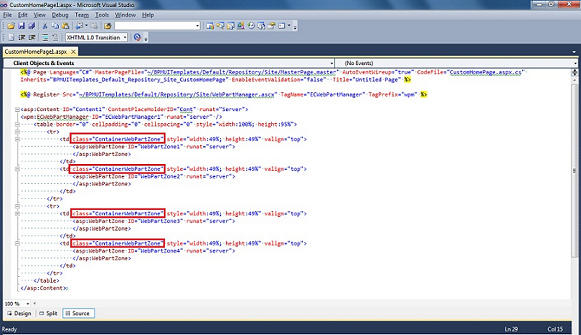

No
Custom home pages can be created according to the organizational requirements and needs. The section below gives details on how to create Custom Home Page.
Creating a new custom home page:
<%@ Register Src="~/BPMUITemplates/Default/Repository/Site/WebPartManager.ascx" TagName="ECWebPartManager" TagPrefix="wpm" %>
Create a table to define the web part zones in an appropriate order. Add the class "ContainerWebPartZone" to the container of the web part zone, refer image below. This class will ensure that the height and width of the web part is adjusted to the height and width of its web zone .

In the above image <td> is the container of the web part zone and the class within the container is highlighted.
EnableEventValidation="false"
<wpm:ECWebPartManager ID="ECWebPartManager1" runat="server" />
The page is blank, as only the web part zone(place holders) have been added and not the web parts. Web Parts have to be added through the Webparts Settings option, the following steps will give you details on how to add web parts:
The web part will be added to the selected web part zone.
Similarly you can add other web parts to the other web part zones.
After adding the controls and specifying the proper width and height, the custom home page looks like the image given below:
Setting up the custom home page as the landing page (Dashboard) for the logged-in user:
We need to make an entry into the SKEWebPartTemplates and SKEWebPartLayouts tables to reflect the custom home page in ‘Default Home Page’ right.
insert into SKEWebPartTemplates values(NEWID(), '<ApplicationName>', '<HomePage Name>', '<HomePage Path>', 'User')
insert into SKEWebPartLayouts values(NEWID(), '<TemplateId>', '<HomePage Name>', null, '<ApplicationName>', GETUTCDATE())
Example:
insert into SKEWebPartTemplates values(NEWID(), 'Bata7Repo', 'Custom home page', '~/BPMUITemplates/Default/Repository/Site/CustomHomePage.aspx', 'User')
insert into SKEWebPartLayouts values(NEWID(), '980D6D0E-137C-46AF-8417-81BD7F1D52A7', 'Custom home page', null, 'Bata7Repo', GETUTCDATE())
After that we can edit the security group and set the custom home page as the Default Home page. Then when the user logs-in Enterprise Console, he will be landed to the Custom home page.
Note: To use the Fill Form web part in the custom ASPX page include the following script in that page.
<script>
function open_win(path)
{
OpenWindow(path);
}
</script>